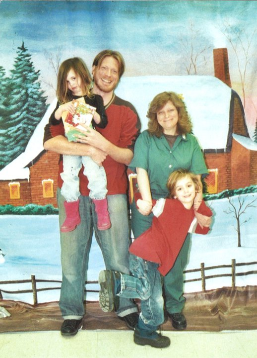

Submitted on Tue, 09/21/2010 - 3:21pm
Marie Mason Transferred to a new prison in Carswell, Texas.
By Kenneth Miller and Erik Davis - {based on original story by FW Miller for the Defiant Spirit}
Fellow Worker Marie Mason, a long-time member of the Industrial Workers of the World, is currently serving a 22-year sentence for two acts property destruction in 1999 and 2000, events in which no injuries were intended, and in which none occurred.
Marie has received the longest sentence of any of the Green Scare defendants, whose prosecution in America appears to be the new front line in the revived COINTELPRO-esque actions of the state. While there is room in our union for discussion and disapproval of the acts that resulted in Marie's imprisonment, the more significant issues before us are the use of Green Scare prosecutions to pioneer a new set of repressive laws and punishments for those who oppose the state in general, and capitalism and its depredations in particular.
The Twin Cities GMB of the IWW voted to 'adopt' FW Mason when she was transferred to a Federal facility in Minnesota, in Waseca, about an hour and a half from the Twin Cities. I was able to make a few visits during her period here, and exchanged many letters. I found her to be an astonishing person, full of optimism and struggle, even in her dire circumstances. She taught guitar and music lessons, and organized with the self-named group of "Spanish Mommies" (Spanish-language speaking imprisoned mothers). Her personal struggles were not her focus, although they were considerable. As a vegan and a practicing Buddhist, she was never permitted a proper diet or the ability to properly practice her faith.
Marie has now been transferred to a new federal facility in Carswell, Texas, near our sisters and brothers in Fort Worth. Marie was held in a Solitary Housing Unit for a considerable amount of time both prior to the transfer and after. While she is now out of solitary, her unit has only 16 others, and they are never permitted to leave the building in which they are housed (i.e., no time outside at all). It is unclear whether her dietary or religious needs are being properly addressed.
At this time, FW Marie needs our actions, and our solidarity. You can help out significantly merely by writing to her; the address is below. Please DO NOT SEND MONEY, as she will be fined for this and the money confiscated. We also hope that fellow workers in Fort Worth and the Carswell area will consider formally 'adopting' her the way the Twin Cities branch did, and make attempts to visit her.
Write her at MARIE MASON #04672-061, FMC CARSWELL, FEDERAL MEDICAL CENTER, P.O. BOX 27137, FORT WORTH, TX 76127 She is being represented by a lawyer at the Civil Liberties Defense Fund in Eugene, Oregon. Contact Kenneth Miller at 412-867-9213 if you are in the Carswell/Fort Worth area.
Consider also reading the blog which is regularly updated with news.
 Sandwich Workers and Customers Unite in Support of Working Class Hero
Sandwich Workers and Customers Unite in Support of Working Class Hero This article originally appeared
This article originally appeared  MINNEAPOLIS– Jimmy John’s workers were doing more than preparing french bread, cold cuts, and sliced tomatoes for “Dollar Sub Day” this morning as union members and supporters hit the bricks outside stores, asking customers to put up tip jars and use them.
MINNEAPOLIS– Jimmy John’s workers were doing more than preparing french bread, cold cuts, and sliced tomatoes for “Dollar Sub Day” this morning as union members and supporters hit the bricks outside stores, asking customers to put up tip jars and use them.